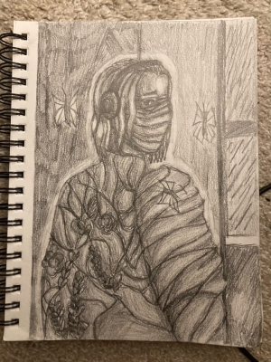

I have been doing traditional art the longest, this includes, pencil, pen and ink, arcylic paint, oil paint, watercolor, gouche, and a ton of others. All of these are made during my high school art classes, and range from, charcoal to paint. I have no intention on stopping traditional artwork or art any time soon.